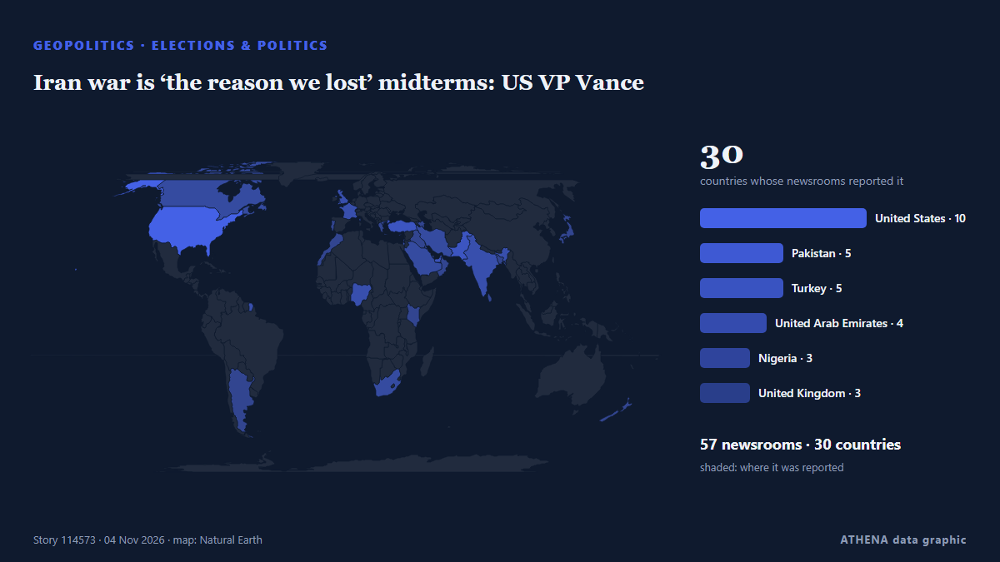

ATHENA Glaux Intelligences — Παγκόσμια ειδησεογραφική ανάλυση — κάθε αριθμός εξηγημένος
Οι ειδήσεις του κόσμου, διασταυρωμένες ανάμεσα σε χώρες
Το ATHENA Glaux παρακολουθεί εκατοντάδες ειδησεογραφικά μέσα σε όλο τον κόσμο και ομαδοποιεί τις αναφορές τους σε γεγονότα. Για κάθε γεγονός βλέπετε πόσα μέσα σε πόσες χώρες το ανέφεραν, ποιος ήταν πρώτος και έναν βαθμό κινδύνου με τους λόγους του — με ενημέρωση κάθε 10 λεπτά, σε επτά γλώσσες.
Ζωντανά από τις ειδήσειςIran war is ‘the reason we lost’ midterms: US VP Vance60 μέσα · 30 χώρες · Κίνδυνος 7.4 · Πηγές: Foreign Policy, Express Tribune

ΓεωπολιτικήIran war is ‘the reason we lost’ midterms: US VP Vance
Trump acknowledges Iran war played role in US midterms defeat. από Gulf News
Οι τίτλοι των ειδήσεων παρουσιάζονται στα αγγλικά, όπως δημοσιεύτηκαν.
Iran’s IRGC says four tankers destroyed after hitting mines near Strait of Hormuz
Coalition says it destroyed two ballistic missile launchers The Coalition has released footage it says shows the targeting and destruction of two ballistic missile launch platforms. από Gulf News
US strikes Iran’s Qeshm island – Report
The US has not publicly announced the attacks, so as not to signal any intention of resuming major combat operations, the Wall Street Journal reported. από CNA (Channel NewsAsia)

Η σημερινή εικόνα
| 22:00 | 375 |
|---|---|
| 23:00 | 613 |
| 00:00 | 428 |
| 01:00 | 389 |
| 02:00 | 302 |
| 03:00 | 495 |
| 04:00 | 524 |
| 05:00 | 296 |
| 06:00 | 620 |
| 07:00 | 1029 |
| 08:00 | 582 |
| 09:00 | 975 |
| 10:00 | 694 |
| 11:00 | 880 |
| 12:00 | 416 |
| 13:00 | 980 |
| 14:00 | 1266 |
| 15:00 | 488 |
| 16:00 | 1056 |
| 17:00 | 820 |
| 18:00 | 420 |
| 19:00 | 395 |
| 20:00 | 309 |
| 21:00 | 549 |
Κίνδυνος των σημερινών γεγονότων
A night of historic firsts: 2026 midterm election winners set new milestones for diversity and generational change
Trump says US will end military aid to Israel by end of the year
Says democrats, left-wing politicians using US financial support to Israel as a talking point to criticise Republicans. από Express Tribune
First polls close in closely watched U.S. midterm elections
The US midterm elections next month could change the course of American politics at home and – and American policy abroad. από The National
Με την ευρύτερη κάλυψη
Αναδυόμενα σήματα
- Νέο όνομα στις ειδήσεις · Ενεργό τώραNative American
- Απότομη αύξηση · Ενεργό τώραUS Congress
- Απότομη αύξηση · Ενεργό τώραSenate and House
- Νέο όνομα στις ειδήσεις · Ενεργό τώραTrump. Democrats
- Απότομη αύξηση · Ενεργό τώραCongressional District
Επίσημες προειδοποιήσεις
- Red notification for tropical cyclone FOUR-26. Population affected by Category 1 (120 km/h) wind speeds or higher is 1.156 million .Red · GDACS ·
- Cyber chief: UK facing AI-powered attacks on critical infrastructure within two yearsadvisory · UK National Cyber Security Centre ·
- M 6.0 - 165 km NW of Port-Olry, VanuatuM6.0 · USGS ·
- M 6.2 - 43 km ESE of Port-Olry, VanuatuM6.2 · USGS ·
Το ATHENA στο Telegram
Μπείτε δωρεάν στην ομάδα ATHENA Glaux και λάβετε τις ειδήσεις τη στιγμή που δημοσιεύονται εδώ:
- έκτακτα γεγονότα με κίνδυνο 6 ή περισσότερο
- ωριαία σύνοψη των κορυφαίων γεγονότων
- ενημερώσεις των παρακολουθήσεων κινδύνου (Ορμούζ, Ερυθρά Θάλασσα, Ταϊβάν, κυρώσεις κ.ά.)
- την ημερήσια ενημέρωση κάθε πρωί στις 10:00 (ώρα Ελλάδας)
- εβδομαδιαία προοπτική
- επίσημες προειδοποιήσεις, αναδυόμενα σήματα και κινδύνους σε άνοδο
Πατήστε το κουμπί, ανοίγει το Telegram, πατήστε «Join». Οι αναρτήσεις είναι στα αγγλικά· μπορείτε να τη σιγάσετε ή να αποχωρήσετε όποτε θέλετε. Δεν έχετε Telegram; Είναι δωρεάν στο telegram.org.
Παρακολούθηση κινδύνων
Περισσότερα ›Παγκόσμιοι κίνδυνοι — εβδομάδα 45, 2026 (2–8 Νοε) ›
Γεωπολιτική, Πολιτική & Ασφάλεια
Περισσότερα ›Amazon still under threat despite Lula win in Brazil: researcher
Our experts unpack what Lula’s victory means for Brazil’s ties with Washington and how it could reshape a region trending right. από Atlantic Council
- Εκλογές & πολιτική
South Africans vote in local elections with ANC missteps in sharp focus
- Διπλωματία & σύνοδοι
Morocco will ‘uphold Western Sahara ceasefire after UN mission ends’
- Διπλωματία & σύνοδοι
Zelenskyy awards Ukraine's Order of Princess Olga to US first lady Melania Trump
- Εκλογές & πολιτική
Who is Keisha Lance Bottoms? First Black woman elected governor in US history
Οικονομία, Χρηματοοικονομικά & Αγορές
Περισσότερα ›US stocks: Wall Street ends higher after Democrats win Congress; data centre stocks tumble
U.S. stocks are climbing Monday after oil prices eased back. από The Korea Times
- Μετοχές, ομόλογα & αγορές
US midterms live: Stocks climb as Democrats take control of Congress
- Πληθωρισμός & επιτόκια
Bank of England set to hike interest rates to 4% to tackle rising inflation
- Χρέος & προϋπολογισμοί
5 talking points from the Oireachtas Committee on Media
- Κρυπτονομίσματα & ψηφιακά στοιχεία
Binance hack may be ‘temporary setback’ for crypto, Grayscale’s Pandl says
Εμπόριο, Βιομηχανία & Υποδομές
Περισσότερα ›Indian Navy Rescues 20 Crew Members From Pirated Vessel Azini In 48-Hour Op
The operation was successfully carried out on November 2, with the Indian Navy locating and intercepting the vessel and securing the safe release of all crew members from heavily armed pirates. από NDTV
- Κατασκευές & υποδομές
2026 Belt and Road Media Cooperation Forum launches Fuzhou Initiative
- Γεωργία & επισιτιστική ασφάλεια
Kellogg’s removes rice grains from Rice Krispies due to ‘changing weather’
- Ναυτιλία & λιμάνια
Iran protests IMO’s biased reports on shipping security
- Αερομεταφορές, σιδηρόδρομος & οδικές
Indian injured in attack on Saudi airport dies, total West Asia toll now 24
Ενέργεια, Πόροι & Περιβάλλον
Περισσότερα ›TotalEnergies Inks 15-Year LNG Supply Deal with China's Jiangsu Guoxin
TotalEnergies has signed an agreement with China's Jiangsu Guoxin Group to supply 900,000 tons of liquefied natural gas (LNG) annually for 15 years, with deliveries expected to begin in 2028… από Offshore Engineer
- Κλίμα & κλιματική πολιτική
Rich countries fall far short on climate adaptation funding, UN says
- Πετρέλαιο & φυσικό αέριο
Stocks surge as Democrats win and oil price slips
- Ρύπανση & βιοποικιλότητα
Mother, daughter dead in suspected grizzly bear attack in Canada
- Πετρέλαιο & φυσικό αέριο
Aramco exploring expansion of East-West Pipeline that avoids Hormuz
Τεχνολογία, ΤΝ & Κυβερνοασφάλεια
Περισσότερα ›Musk’s Tesla, SpaceX slide as Democrats take control of Congress
Tesla shares drop 2.6% and SpaceX slides 2.1% in early trading as Musk-backed Republicans lose Texas Senate and governor’s races. από Anadolu Agency (English)
- Κυβερνοασφάλεια
British adventurer Karl Bushby completes 28-year walk around the world
- Κυβερνοασφάλεια
Kyiv Independent hit by suspected Russian cyberattack
- Διάστημα & δορυφόροι
NASA telescope is on the verge of plunging back to Earth after failed rescue mission
- Τηλεπικοινωνίες & δίκτυα
Want an iPhone Duo for the holidays? Apple’s latest stock update isn’t reassuring
Επιχειρήσεις, Εταιρείες & Επενδύσεις
Περισσότερα ›GXO reports stronger growth as logistics contract wins accelerate
GXO Logistics reported higher revenue and net income for the third quarter of 2026, supported by stronger organic growth and an increase in new business contracts. από Container News
- Συγχωνεύσεις & εξαγορές
Democratic takeover of US Congress: What happens next
- Εταιρική στρατηγική
Canva announces layoffs, job changes for about 22% of workforce
- Συγχωνεύσεις & εξαγορές
Google extends voluntary buyout offers to employees in several countries amid heavy AI spending
- Συγχωνεύσεις & εξαγορές
Culture Secretary formally intervenes in Sky’s £1.6bn ITV deal
Υγεία, Επιστήμη & Έρευνα
Περισσότερα ›California Proposition Roundup: Results So Far
Voters weighed in on 14 state propositions; two have passed and two have failed, according to the Associated Press. από KQED News (San Francisco)
- Διάστημα & φυσική
NASA's Swift space telescope plunges to Earth after 22 years in orbit
- Επιδημίες & δημόσια υγεία
British healthcare worker with Ebola evacuated from DR Congo to UK
- Επιδημίες & δημόσια υγεία
WHO approves clinical trials on two new Ebola vaccines
- Συστήματα υγείας
NFL-Lions linebacker Campbell has full movement in lower body after injury
Κοινωνία, Δίκαιο & Δημόσια Πολιτική
Περισσότερα ›Google will let schools turn off AI, but they may also lose Search
New York — Google is rolling out new controls for schools to limit students’ access to the company’s AI tools. από Egypt Independent
- Εκπαίδευση & δεξιότητες
International News: French High School protests resume on smaller scale
- Δικαιοσύνη
Ex-Diddy prosecutor to lead Cornell gang rape investigation
- Δικαιοσύνη
Dozens arrested outside Supreme Court hearing on Palestine Action ban
- Εγκλήματα & διαφθορά
Secret police files released in Hungary, 37 years after fall of communism
Αθλητισμός
Περισσότερα ›Djokovic battles through Paris Masters opener
The victory over Valentin Vacherot kept alive the Serbian 24-time Grand Slam champion's chances of landing a spot in the season-ending ATP Finals. από Free Malaysia Today
- Ποδόσφαιρο
Fenerbahce 3 Liverpool 2 LIVE - Andoni Iraola and Kostas Tsimikas react as Reds suffer first Champions League loss
- Ποδόσφαιρο
Valverde late strike seals Real Madrid 3-2 win at AEK
- Ποδόσφαιρο
Goalkeeper Owono says ‘hardest days of my life’ after De Miguel death
- Τένις
Djokovic keeps alive bid to squeeze into ATP Finals
Πολιτισμός, Πρόσωπα & Τρόπος ζωής
Περισσότερα ›'Godzilla Minus Zero2 gets loud applause at Tokyo film festival
Since the release of Godzilla Minus One in 2023, things have gotten a bit crazy... από Empire
- Μουσική
Bob Dylan meets Pope Leo at the Vatican
- Βασιλικοί οίκοι & πρόσωπα
John Frieda's iconic Frizz Ease range made him a household name - here's the product that started it all
- Βασιλικοί οίκοι & πρόσωπα
‘This is redemption time’: celebrities react to Democrats’ historic midterms sweep
- Κινηματογράφος & τηλεόραση
Cartoon for October 30, 2026